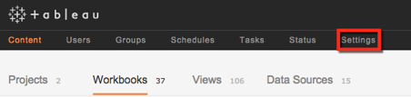
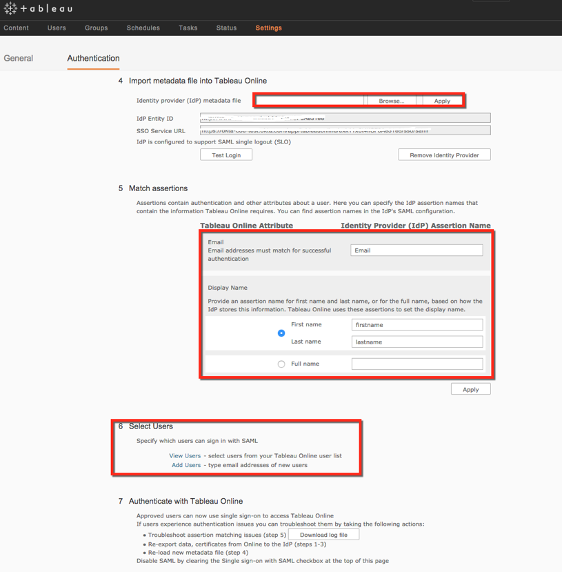

Sign into your Tableau Online account as the site administrator.
Select Settings on the top menu, as shown below.

Select Authentication, as shown below.

Copy the following IDP Metadata into a text file. Save it with the file name metadata.xml
In the 4. Import metadata file into Tableau Online section on the Tableau Online screen, select Browse and upload the metadata.xml file you just downloaded, as shown below.

Enter Email, firstname, and lastname in the 5. Match Assertions section, as shown above.
In the 6. Select Users section, select Add Users, add users, and change their authentication type from Tableau ID to Single Sign On, as desired, as shown above.
Done!
Note: Tableau Online supports IdP-initiated and SP-initiated flows. Just In Time (JIT) provisioning is not supported.